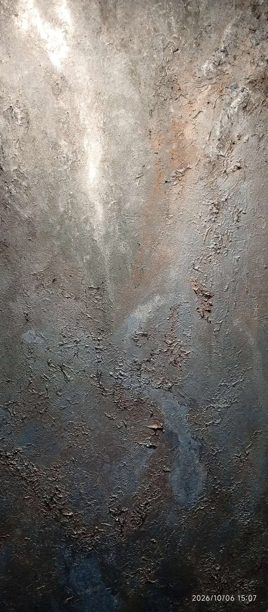
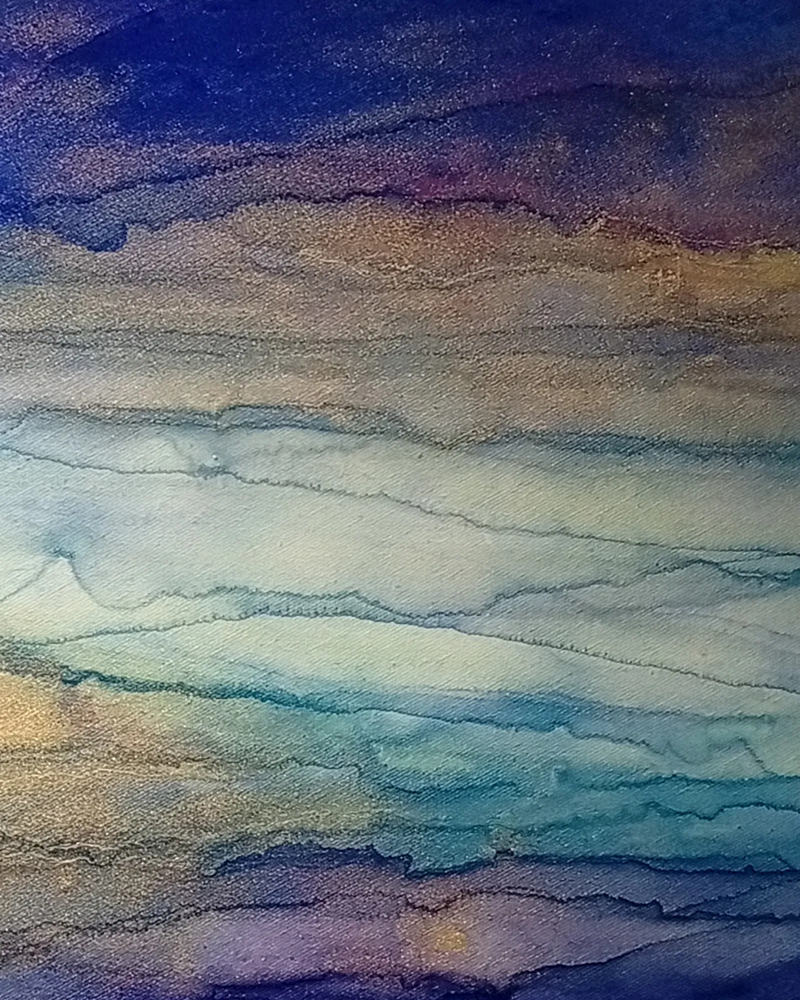

Concept
世界観
Exhibition statement
～ ゆらぎの間で ～
作品との出会いが、日々の見え方を少し変えることがある。
「ゆらゆら」は、そんな可能性を大切にするグループ展です。
色やかたち、素材の質感。
作品の前で立ち止まり、それぞれの感覚で過ごす。
意味を言葉にできなくても、ただ眺めていてもかまいません。
表現も、受け取り方も、一つではありません。
Artistの多様な表現と、鑑賞する人の自由な感じ方を尊重します。
ここで過ごす時間が、自分で何かを感じ、考えるきっかけになればと願っています。
そのための空間と余白を、作品と人のあいだにつくりたいと考えています。
A moment to feel
感じるということ
自然の景色を眺めるときのように、
すぐに答えを探さず、作品と過ごしてみる。
目に留まる色や、素材の気配。
言葉になる前の感覚も、そのままに。
何を受け取るかは、一人ひとりに委ねられています。

